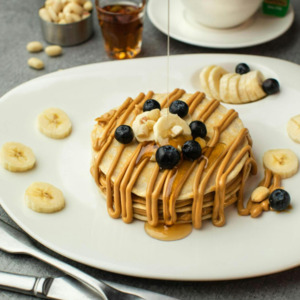

Banana Pancakes
By incorporating banana pancakes into your child's diet, you're not only satisfying their taste buds but also providing them with essential nutrients and energy to support their overall health and well-being. Here's a simple and budget-friendly recipe for banana pancakes that your kids are sure to love:
- 1 medium banana, with a few brown spots
- 1 Large Egg
- 2 Tbsp flour
- 1/4 tsp cinanminamon
- Mash: in a medium bowl, mash the banana until very smooth with only a few lumps.
- Add: add in the flour, egg and cinnamon (if using).
- Mix: with a fork or whisk, mix until everything is combined.
- Cook: heat a medium skillet over medium heat, spray with cooking spray or add a little butter if needed. Drop one tablespoon of batter on the skillet and let cook for 3-4 minutes or until the sides are starting to become firm and the bottoms are golden brown. You will not see any bubbles like traditional pancakes. Flip and cook for another 2-3 minutes or until golden brown.